Pandas : séries temporelles
Sommaire :
- Chapitre 1 : Travailler avec des séries Temporelles
- Chapitire 2 : Resample
- Chapitre 3 : Aggregate
- Chapitre 4 : Moving Average et EWM
- Chapitre 5 : Comparaison de 2 série temporelles
- Chapitre 6 : Exercice et Solution
üìÇ T√©l√©charger la base de donn√©e bitcoin
üìÇ T√©l√©charger la base de etherum
1. Travailler avec des séries Temporelles
import numpy as np
import matplotlib.pyplot as plt
import pandas as pd
bitcoin = pd.read_csv('BTC-EUR.csv', index_col='Date', parse_dates=True)
bitcoin.head()
-
Open High Low Close Adj Close Volume
Date
2011-10-04 3.700 3.821 3.746 3.750 3.750 1357
2011-10-05 3.750 3.820 3.650 3.676 3.676 3349
2011-10-06 3.676 3.743 3.450 3.550 3.550 6642
2011-10-07 3.550 3.590 2.900 3.293 3.293 7135
2011-10-08 3.293 3.283 2.872 2.890 2.890 2007
bitcoin['Close'].plot(figsize=(9, 6))
plt.show()
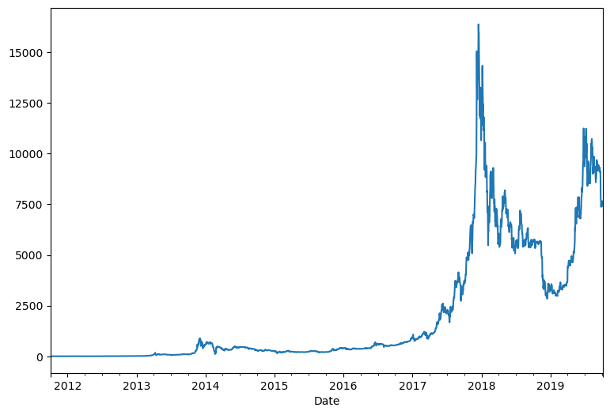
bitcoin.index
-
DatetimeIndex(['2011-10-04', '2011-10-05', '2011-10-06', '2011-10-07',
'2011-10-08', '2011-10-09', '2011-10-10', '2011-10-11',
'2011-10-12', '2011-10-13',
...
'2019-09-25', '2019-09-26', '2019-09-27', '2019-09-28',
'2019-09-29', '2019-09-30', '2019-10-01', '2019-10-02',
'2019-10-03', '2019-10-04'],
dtype='datetime64[ns]', name='Date', length=2923, freq=None)
bitcoin.loc['2017':'2019','Close'].plot()
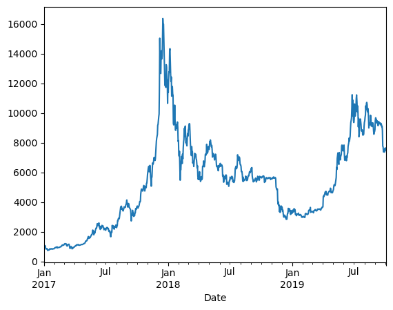
2. Resample
bitcoin.loc['2019', 'Close'].resample('M').mean().plot()
plt.show()
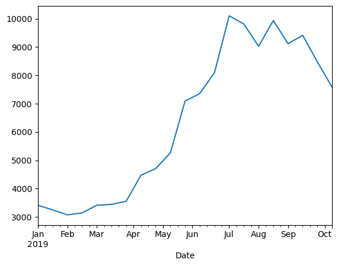
bitcoin.loc['2019', 'Close'].resample('2W').mean().plot()
plt.show()
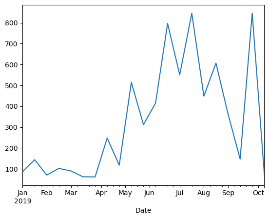
bitcoin.loc['2019', 'Close'].resample('2W').std().plot()
plt.show()

plt.figure(figsize=(12, 8))
bitcoin.loc['2019', 'Close'].plot()
bitcoin.loc['2019', 'Close'].resample('M').mean().plot(label='moyenne par mois', lw=3, ls=':', alpha=0.8)
bitcoin.loc['2019', 'Close'].resample('W').mean().plot(label='moyenne par semaine', lw=2, ls='--', alpha=0.8)
plt.legend()
plt.show()
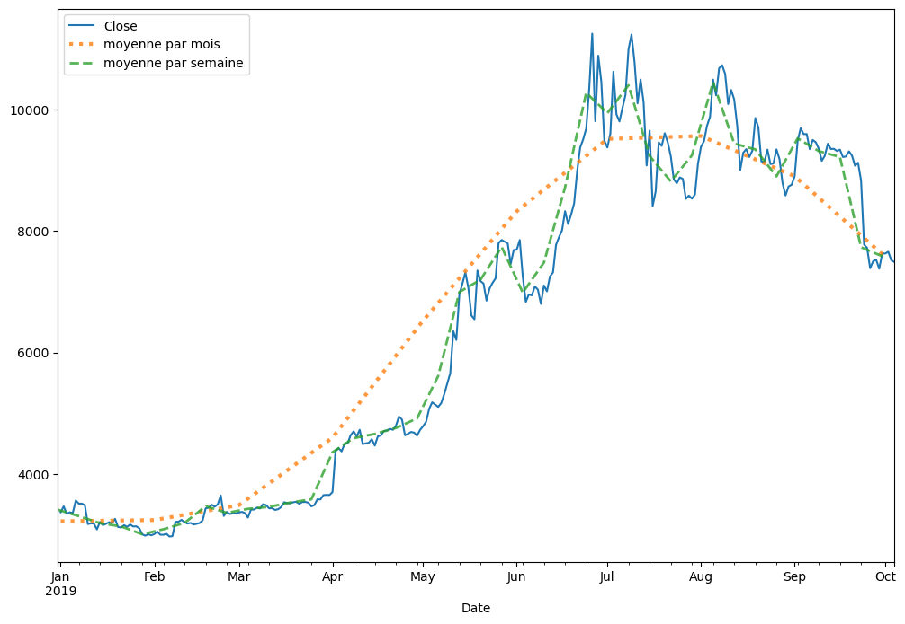
3. Aggregate
m = bitcoin['Close'].resample('W').agg(['mean', 'std', 'min', 'max'])
plt.figure(figsize=(12, 8))
m['mean']['2019'].plot(label='moyenne par semaine')
plt.fill_between(m.index, m['max'], m['min'], alpha=0.2, label='min-max par semaine')
plt.legend()
plt.show()
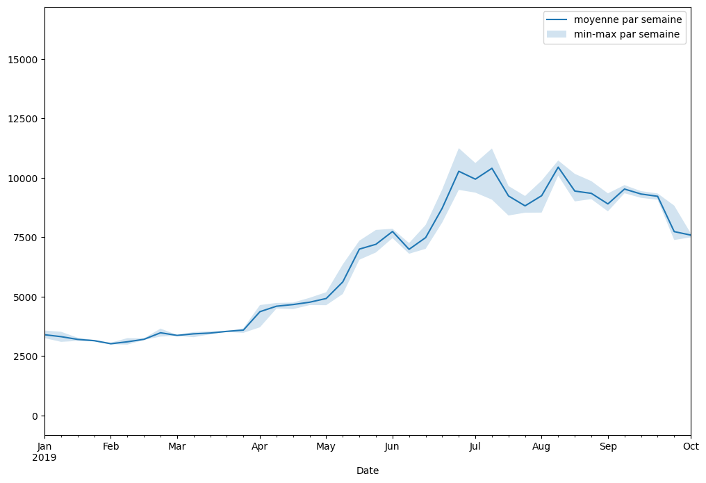
bitcoin.loc['2019', 'Close'].resample('W').agg(['mean', 'std', 'min', 'max']).plot()
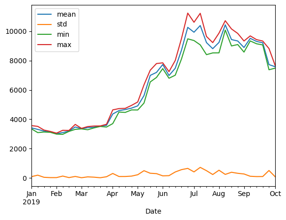
4. Moving Average et EWM
plt.figure(figsize=(12, 8))
bitcoin.loc['2019-09', 'Close'].plot()
bitcoin.loc['2019-09', 'Close'].rolling(window=7).mean().plot(label='non centre', lw=3, ls=':', alpha=0.8)
bitcoin.loc['2019-09', 'Close'].rolling(window=7, center=True).mean().plot(label='centre', lw=3, ls=':', alpha=0.8)
bitcoin.loc['2019-09', 'Close'].ewm(alpha=0.6).mean().plot(label='ewm', lw=3, ls=':', alpha=0.8)
plt.legend()
plt.show()
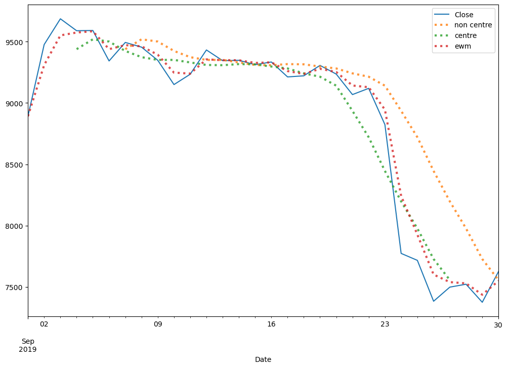
plt.figure(figsize=(12, 8))
bitcoin.loc['2019-09', 'Close'].plot()
for i in np.arange(0.2, 1, 0.2):
bitcoin.loc['2019-09', 'Close'].ewm(alpha=i).mean().plot(label=f'ewm {i}', ls='--', alpha=0.8)
plt.legend()
plt.show()
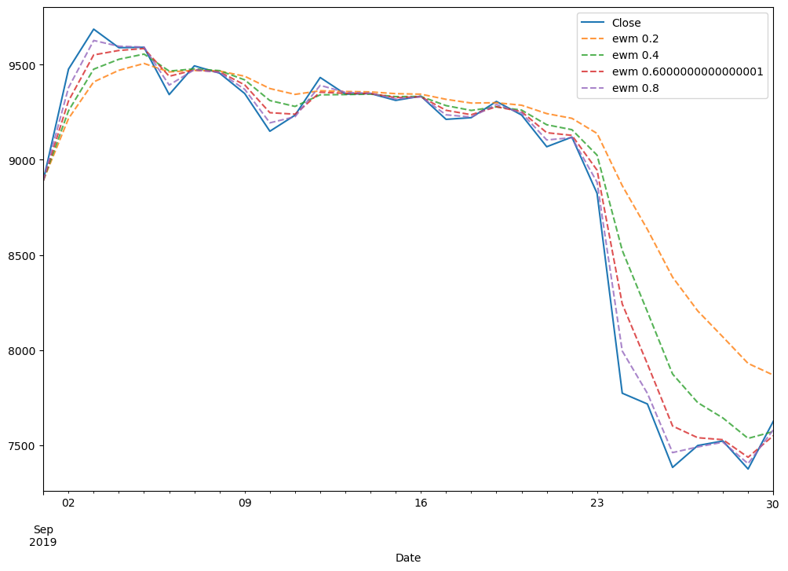
5. Comparaison de 2 série temporelles
ethereum = pd.read_csv('ETH-EUR.csv', index_col='Date', parse_dates=True)
btc_eth = pd.merge(bitcoin, ethereum, on='Date', how='inner', suffixes=('_btc', '_eth'))
btc_eth.iloc[:, [btc_eth.columns.get_loc('Close_btc'), btc_eth.columns.get_loc('Close_eth')]].loc['2019-09'].plot(subplots=True, figsize=(12, 8))
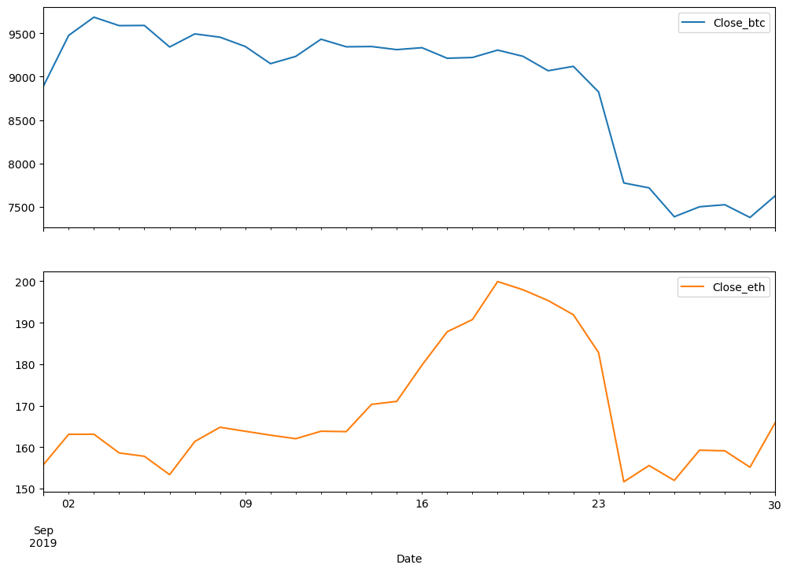
6. Exercice et Solution
Exercice
Implémentation de la Stratégie de la Tortue
La stratégie de la Tortue est une méthode de trading basée sur des seuils de breakout, en utilisant des moyennes glissantes pour identifier des opportunités d'achat et de vente.
Dans cet exercice, vous allez :
- Créer deux seuils :
- Le maximum glissant sur une fenêtre de 28 jours (RollingMax).
- Le minimum glissant sur une fenêtre de 28 jours (RollingMin).
- Identifier les signaux d'achat et de vente :
- Un signal d'achat est généré lorsque le prix de clôture dépasse le RollingMax.
- Un signal de vente est généré lorsque le prix de clôture est inférieur au RollingMin.
- Afficher les graphiques pour visualiser les signaux d'achat et de vente.
Données
Vous utiliserez les données Bitcoin contenues dans le DataFrame bitcoin, qui contient une colonne 'Close' correspondant au prix de clôture.
Étapes à suivre
-
Ajouter des colonnes RollingMax et RollingMin :
- Utilisez la méthode
.rolling(window=28).max()pour calculer le maximum glissant. - Utilisez la méthode
.rolling(window=28).min()pour calculer le minimum glissant.
- Utilisez la méthode
-
Générer les colonnes Buy et Sell :
- Ajoutez une colonne
'Buy'contenant1si le prix de clôture dépasse RollingMax, et0sinon. - Ajoutez une colonne
'Sell'contenant-1si le prix de clôture est inférieur à RollingMin, et0sinon.
- Ajoutez une colonne
-
Tracer les graphiques :
- Dans un graphique, affichez :
- Le prix de clôture (
Close). - Le maximum glissant (
RollingMax). - Le minimum glissant (
RollingMin).
- Le prix de clôture (
- Dans un second graphique, affichez :
- Les signaux d'achat (
Buy). - Les signaux de vente (
Sell).
- Les signaux d'achat (
- Dans un graphique, affichez :
Résultat attendu
Votre graphique final devra inclure :
- Premier graphique :
- La courbe du prix de clôture.
- Les lignes RollingMax et RollingMin.
- Deuxième graphique :
- Les points de signal d'achat (en vert).
- Les points de signal de vente (en rouge).
Exemple attendu :
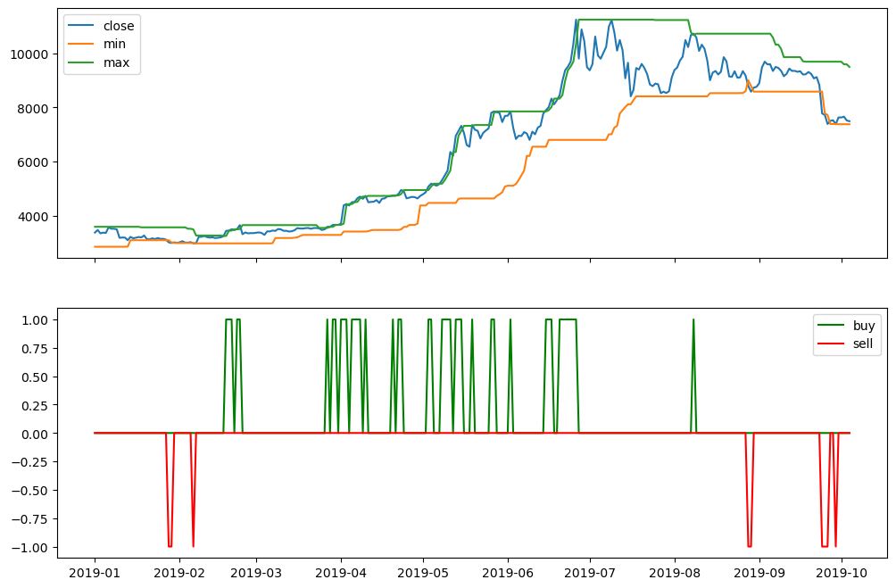
Bonne chance !
üí° Cliquez ici pour voir la solution
Solution
data = bitcoin.copy()
data['Buy'] = np.zeros(len(data))
data['Sell'] = np.zeros(len(data))
data['RollingMax'] = data['Close'].shift(1).rolling(window=28).max()
data['RollingMin'] = data['Close'].shift(1).rolling(window=28).min()
data.loc[data['RollingMax'] < data['Close'], 'Buy'] = 1
data.loc[data['RollingMin'] > data['Close'], 'Sell'] = -1
start ='2019'
end='2019'
fig, ax = plt.subplots(2, figsize=(12, 8), sharex=True)
#plt.figure(figsize=(12, 8))
#plt.subplot(211)
ax[0].plot(data['Close'][start:end])
ax[0].plot(data['RollingMin'][start:end])
ax[0].plot(data['RollingMax'][start:end])
ax[0].legend(['close', 'min', 'max'])
ax[1].plot(data['Buy'][start:end], c='g')
ax[1].plot(data['Sell'][start:end], c='r')
ax[1].legend(['buy', 'sell'])